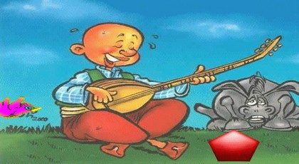

Keloğlan ile Kırmızı Taş

Bir varmış, bir yokmuş…
Evvel zaman içinde, kalbur saman içinde, uzak bir ülkede Keloğlan ve annesi yaşarmış. Annesi onu çok sever, “Kel oğlum keleş oğlum, canımın içi oğlum; büyü de anana bak, anan yaşlanıyor a oğlum,” dermiş. Anası böyle söyledikçe Keloğlan hoplar zıplar, şımarır, “A benim canım anam, gözümün nuru anam; hele sen bir yaşlan, Keloğlan sana bakar anam,” diye cevap verirmiş.
Bir gün annesi komşuya gitmek için evden çıkmış, çıkarken de Keloğlanı tembihlemiş:
“Sakın ha evden dışarı çıkma, kırmızı taşla maşla da oynama; sonra yel alır seni, orada ah anam diye ağlama!”
“Tamam, anam canım anam; hiçbir yere gitmem anam,” demiş bizim Keloğlan ve anasının arkasından el sallamış.
Masal bu ya, o sırada bir kuş Keloğlanın odasının camına gelmiş ve ona seslenmiş:
“Kel oğlan keleş oğlan, neden bu telaş oğlan? Anan sana kal dedi, ama sen gel geç oğlan!”
Keloğlan şaşırmış önce; kuşun nasıl konuştuğuna akıl sır erdirememiş. Sonra;
“Sen nasıl konuşuyorsun böyle?” diyerek kuşa doğru koşmuş, kuşu kanadından yakalamaya çalışmış. Kuş öyle bir uçmuş ki, sanırsınız bir daha kimseler yakalayamaz.
Keloğlan;
“Vay benim kel başım keleş başım… Vay benim can kuşum,” diye ağlamaya başlamış. Bir süre sonra, kendisi de niye ağladığını anlamamış, söylediklerine akıl sır erdirememiş. O sırada kuş tekrar cama doğru yaklaşıp;
“Kırmızı taşa bak, hemen olduğun yerden kalk; Prensesi bul, çabuk uzaklaş oradan,” diyerek uçup gitmiş.
Keloğlan ne olduğunu anlamaya çalışmış ama bir türlü çözememiş. Ancak içinden bir ses ona âdeta baskı yapıyormuş; meraktan çatlayacak hale gelmiş. Nihayet evden çıkmış, saatlerce yürümüş yürümüş; bir süre sonra kaybolduğunu anlamış. Kaybolmuş ama sanki başka bir ülkeye gelmiş gibiymiş. Her yerde kırmızı taşlar varmış. Taşlara doğru eğilip dokunmaya çalışınca, taşlar kaçmaya başlıyormuş. Keloğlan onları kovalamış taşlar kaçmış, Keloğlan kovalamış taşlar kaçmış ve anasının söylediği o rüzgâr Keloğlanı almış uçurmuş. Keloğlan uçarken bir yandan da anasının sözlerini hatırlıyormuş. En sonunda kendini karanlık bir çukurun içinde bulmuş.
Etraf koyu karanlıkmış. Keloğlan bu zifir karanlık içinde ne yapacağını bilemez halde duruyorken, bir kuş yükselmiş havaya doğru. Bu kuş, Keloğlanın yanına gelen küçük kuşun ta kendisiymiş. Keloğlana kanadının birini uzatmış. Keloğlan tam kanadını tutuyormuş ki, kuş onun eline kırmızı bir taş bırakıp uçuvermiş.
Keloğlan günlerce elinde kırmızı taşla dolaşmış durmuş, hatta yoluna çıktığı bir ejderha az kalsın onu yiyecekmiş, bizimki canını zor kurtarmış. Birkaç gün sonra da bir cüce yolunu keserek, “Sen bu kırmızı taşı ne yapacaksın, bırak git,” demiş. Keloğlan cüceyi bir süre kovalamış, ama sonunda cüce gözden kaybolmuş. Bir ara kafasını çevirip bakmış ki, kocaman bir saray yanı başında durmuyor mu?
Sarayın kapısında yine o küçük kuş duruyormuş. Keloğlan elindeki kırmızı taşı kuşa doğru fırlatarak;
“Benim başıma ne haller açtın! Senin yüzünden nerelere geldim ben! Anamı nasıl bulacağım söyle! Köyüme nasıl döneceğim?” diye bağırmaya başlamış.
Kırmızı taş kuşun kafasına çarpmış; çarpar çarpmaz etrafa kırmızı taşlar yağmaya başlamış ve o kuş, güzeller güzeli bir prenses oluvermiş. Keloğlan da bu prensesle kırk gün kırk gece düğün yaparak evlenmiş ve birlikte köyüne, anasının yanına dönmüşler.